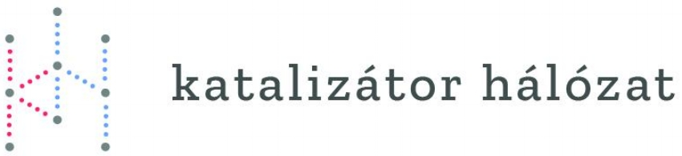

MÉLYSZEGÉNYSÉG
AKTUÁLIS
PARTNEREK
ARCHÍVUM
KAPCSOLAT
ARCHÍVUM
2018
A Polgár Alapítvány újratervezése
- 2018 április 17
ÉRTE-m TE-tted Díj 2018 – FELHÍVÁS
- 2018 február 22
2017
Lehet-e széllel szemben...? – A Freskófalu-projekt tanulságai
- 2017 november 09
Cigánygyerekek az iskolában: Integráció vagy szegregáció?
- 2017 április 06
Közszociológiai Műhelybeszélgetés a menekültekkel való szolidaritás tanulságairól - 2017. január
- 2017 január 18
2016
Konfrontáció vagy együttműködés? A civilek és a hatalom viszonya
- 2016 november 22
Társadalmi vállalkozások falun: hogyan fejleszthetık a külvilággal való kapcsolatok?
- 2016 október 19
Társadalmi részvétel / Participatív szemlélet - 2016. november
- 2016 október 13
Hálózatok: divat vagy szükségszerűség?
- 2016 május 23
A for-profit és a civil szektor viszonya: hosszú távú kapcsolat vagy egyéjszakás kaland?
- 2016 április 18
A messziről jött ember
- 2016 március 21
2015
Futball és társadalmi integráció
- 2015 november 16
Eladósodottság és adósságrendezés. A mélyszegénységben élők gazdasági stratégiái és lehetőségei
- 2015 Sep 22
2014
Az uzsora "alulnézete"
- 2014 május 13
A „Romanicum-brand”, avagy a képzőművészeti cigány kiválóság piacosítása
- 2014 április 08
A tanodák jelene és jövője: hatékonyság és hálózatosodás
- 2014 március 11
Színház és marginalitás: társadalmi beavatkozás / -bevonás / -felelősségvállalás
- 2014 január 14
2013
„Játék és valóság” A társadalmi érzékenyítés innovatív eszközei: a társasjátékok
- 2013 december 10
Hogyan (ne) szervezzünk szegényeket támogató hálózatokat?
- 2013 november 12
Veszélyeztetett gyerekekkel végzett programok, résztvevők közötti együttműködések egy USA-beli középiskolában
- 2013 augusztus 08
Közoktatás és mélyszegénység: néhány pedagógiai és intézményi probléma
- 2013 május 21
Sporttal a mélyszegénység ellen
- 2013 április 09
Vidékfejlesztés - Megújuló energiák – Mélyszegénység
- 2013 március 12
Mit tehet az egyetem a mélyszegénység csökkentéséért?
- 2013 február 12
A Katalizátor Hálózat* idei első találkozója
- 2013 január 15